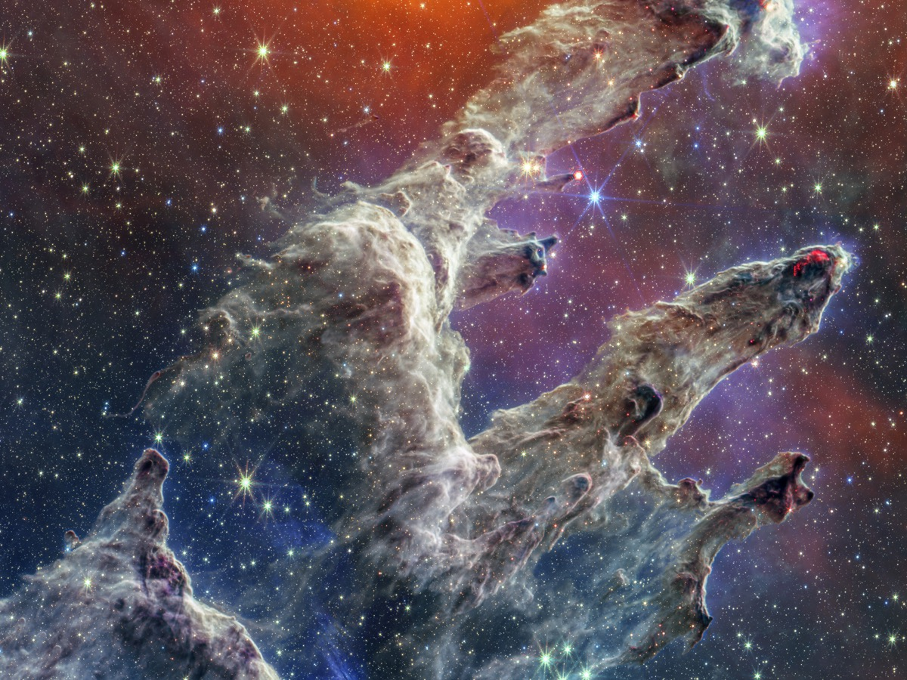
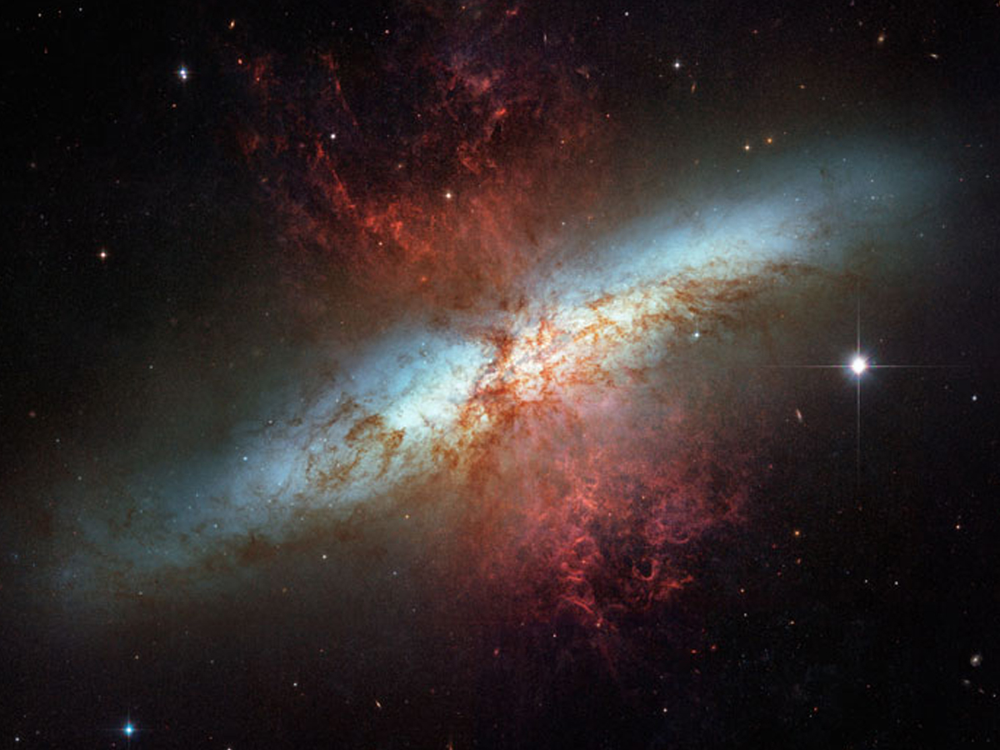

Research
Connecting galaxies, gas, and the cosmic web in an evolving cosmic ecosystem.
ISM
星間物質 (ISM) は、星形成の直接的な材料となるガスの貯蔵庫であると同時に、星からのフィードバックによって物質・重元素・エネルギーが還元される"場"でもあります。
私は、銀河における星形成とその抑制を引き起こす物理過程や、超新星爆発や 活動銀河核 (AGN)/星からのフィードバックが、ISM ひいては星形成に及ぼす影響に興味を持って研究を行っています。また、宇宙時間において星間物質の物理状態がどのように変化してきたのか、そして銀河内部のガス貯蔵庫が、より広域のバリオンサイクルとどのようにつながっているのかにも関心を持っています。
(Image Credit: NASA/ESA/CSA/STScI/J. DePasquale, A. Pagan, A. M. Koekemoer)

CGM
銀河周辺物質 (CGM) は、銀河と銀河間空間をつなぐ領域に存在し、銀河への新たなガスの流入や、アウトフローによるガス・重元素・エネルギーの輸送の痕跡を保持しています。
私の研究の中心的なテーマの一つは、銀河内部の星形成や恒星・AGN からのフィードバック、そして周囲の大規模構造環境が CGM の物理的性質をどのように形づくるのかを明らかにすることです。さらに、これらの過程が宇宙時間の経過とともにどのように変化してきたのか、銀河内部で生成された重元素がどのように外側へ運ばれ、CGM や銀河間物質を汚染するのかも重要な問いです。こうした問いを、多波長観測を通じて明らかにすることを目指しています。
(Image Credit: NASA/ESA/Hubble Heritage Team)

IGM
銀河間物質 (IGM) は、宇宙に存在するバリオンの主要な貯蔵庫の一つであり、銀河と銀河の間の空間を満たしながら、コズミックウェブ構造に沿って分布しています。また、IGM には、大規模スケールにおけるバリオンの分布や電離状態、重元素汚染、さらには熱的進化の情報も刻まれており、宇宙における物質の進化を理解する上でも重要な研究対象です。
私は、IGM が銀河進化に及ぼす影響と、IGM の物理的性質が宇宙時間の経過とともにどのように変化してきたのかを研究しています。また、銀河内部で生成された重元素がどのように IGM へ運ばれ、銀河間空間を汚染してきたのかにも関心を持っています。さらに、IGM を観測的なプローブとして利用し、宇宙再電離の進行やその背後にある物理過程を解明することも重要な研究テーマの一つです。これらの問いに、観測・シミュレーション両方のデータを用いて取り組んでいます。
(Image Credit: Bruno Villasenor et al., 2022, ApJ, 933, 59)

LSS
宇宙の大規模構造 (LSS) とは、フィラメント、ノード、ボイドからなる巨大な網目状の物質分布であり、コズミックウェブとも呼ばれています。この構造は、銀河が形成され、進化する上での環境的な枠組みを与えています。
私は、個々のダークマターハローからコズミックウェブに至るさまざまな空間スケールで、周囲の環境が銀河進化をどのように左右するのか、また、銀河の進化過程が周囲の物質やガスの分布にどのように依存するのかに興味を持っています。広視野サーベイによる銀河や物質の密度場の再構築データをもとに、星形成活動、ISM の物理的性質、IGM の吸収線情報と比較することで、銀河進化と LSS の間にある物理的なつながりを明らかにすることを目指しています。
(Image Credit: Metin Ata et al., 2022, Nature Astronomy, 6, 857)